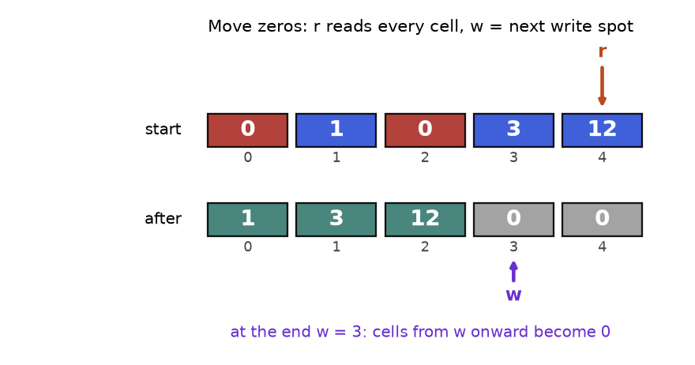
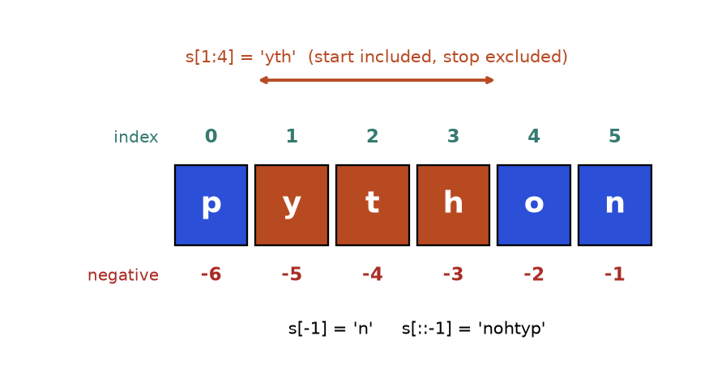
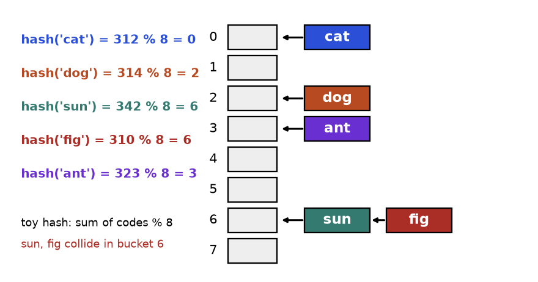
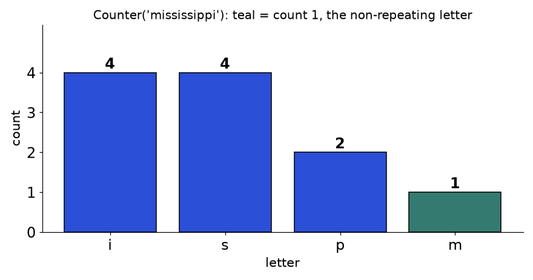
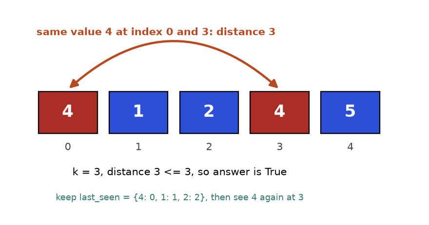
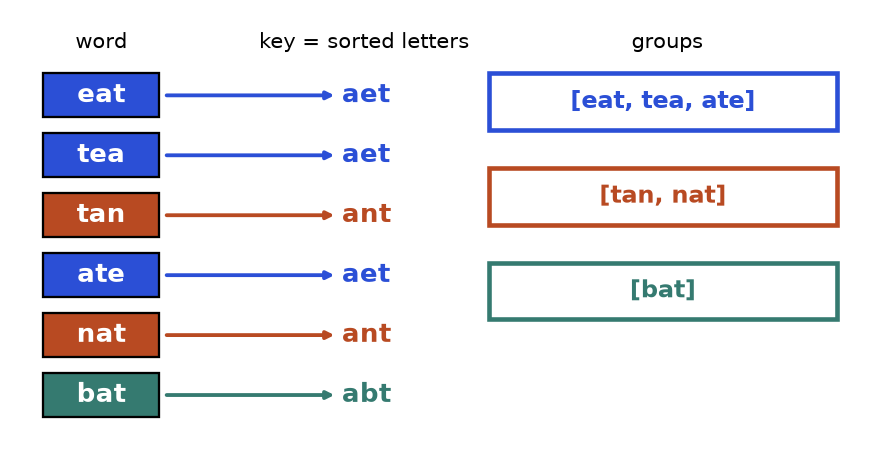
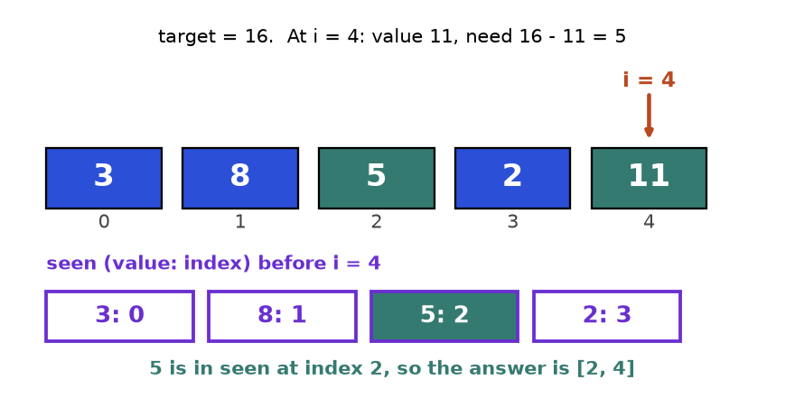
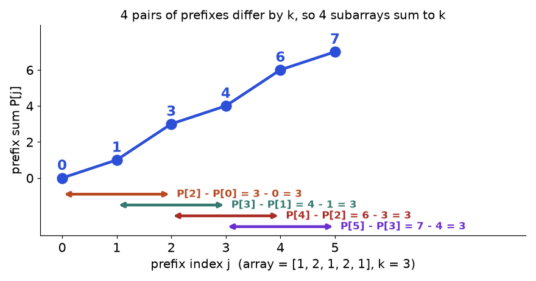
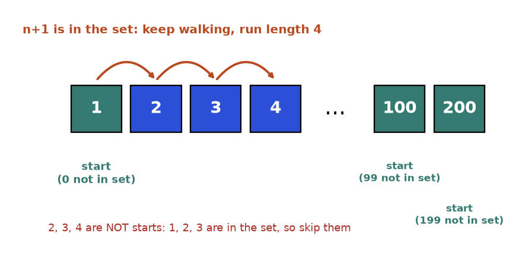

A food-delivery app receives 2 million orders a day. Support asks three questions. Did the same order ID arrive twice? Which two items on this bill add up to the voucher value? What is the longest run of consecutive order numbers without a gap? Comparing every order with every other order takes hours. Remembering what you have already seen takes seconds. The tool that does the remembering is the hash table (in Python: dict and set).
This chapter is the foundation of the whole document. You will learn arrays and strings (the raw material), then hashing (the speed-up), then six patterns built on it: counting, duplicates, grouping, the two-sum family, prefix sums with a dictionary, and consecutive sequences. Every pattern has the same shape: idea, real-life picture, signals, figure, template, trace, and solved problems from easy to hard.
All code was run with plain Python 3 and the outputs shown are real. Each block is standalone: copy it and it runs.
Costs. Index, assign and len: O(1). append and pop() at the end: O(1) amortised (average over many calls). insert(0, v), pop(0), x in a and a.index(x): O(n). A slice a[i:j] copies j - i items. "In place" means changing the same list with O(1) extra memory.

How to read it: the top row is the input. The bottom row is the result. Reader r ends at the last cell. Writer w ends at 3, the first cell that must be filled with zeros.
def keep_in_place(a, keep):
"""Keep only items where keep(item) is True, in the same order.
Returns how many were kept. The list a is changed in place."""
w = 0 # writer: next free slot for a kept item
for r in range(len(a)): # reader: looks at every item once
if keep(a[r]): # decide: is this item kept?
a[w] = a[r] # copy it to the writer slot
w += 1 # advance the writer only when we keep
return w # a[:w] is the answer; a[w:] is leftover
nums = [5, 2, 9, 2, 7]
k = keep_in_place(nums, lambda x: x != 2)
print(k, nums[:k])3 [5, 9, 7]The writer copies each non-zero down. After the loop, everything from w onward is overwritten with zeros.
| Step | r | a[r] | Action | w after | Array after |
|---|---|---|---|---|---|
| 1 | 0 | 0 | zero, skip | 0 | [0, 1, 0, 3, 12] |
| 2 | 1 | 1 | a[0] = 1 | 1 | [1, 1, 0, 3, 12] |
| 3 | 2 | 0 | zero, skip | 1 | [1, 1, 0, 3, 12] |
| 4 | 3 | 3 | a[1] = 3 | 2 | [1, 3, 0, 3, 12] |
| 5 | 4 | 12 | a[2] = 12 | 3 | [1, 3, 12, 3, 12] |
| 6 | - | - | fill a[3:] with 0 | 3 | [1, 3, 12, 0, 0] |
Problem 2.1.1 (Easy) Move all zeros of a list to the end, keeping the order of the other numbers. Change the list in place.
| Idea | Reader-writer: copy non-zeros forward, then zero-fill the tail. |
|---|---|
| Brute force | Build two new lists (non-zeros, zeros) and join: O(n) time but O(n) extra memory, which breaks the "in place" rule. Repeated pop and append in the middle is O(n²). |
| Better approach | Template above: one pass, O(1) memory. |
| Code | Below. |
| Dry run | The trace table above. |
| Complexity | Time O(n), space O(1). |
| Edge cases | Empty list, all zeros, no zeros. |
def move_zeros(a):
w = 0
for r in range(len(a)):
if a[r] != 0:
a[w] = a[r]
w += 1
for i in range(w, len(a)): # fill the tail with zeros
a[i] = 0
for case in ([0, 1, 0, 3, 12], [], [0, 0], [4, 5]):
move_zeros(case)
print(case)
a = [0, 1, 0, 3, 12]
move_zeros(a)
assert a == [1, 3, 12, 0, 0][1, 3, 12, 0, 0]
[]
[0, 0]
[4, 5]Problem 2.1.2 (Hard) Given an unsorted list of integers, find the smallest positive integer that is missing. Use O(n) time and O(1) extra memory.
| Idea | With n items, the answer is between 1 and n + 1. So use the list itself as a hash table: value v belongs at index v - 1. Swap each value into its home. The first index whose value is wrong gives the answer. |
|---|---|
| Brute force | Try 1, 2, 3, ... and test each with x in a: O(n²). Or put everything into a set: O(n) time but O(n) memory. |
| Better approach | Cyclic placement. For each position, while a[i] is in 1..n and not already home, swap it home. |
| Code | Below. |
| Dry run | [3,4,-1,1]. i=0: 3 belongs at index 2, swap with -1: [-1,4,3,1]; -1 is out of range, move on. i=1: 4 belongs at index 3, swap with 1: [-1,1,3,4]; now 1 belongs at index 0, swap: [1,-1,3,4]; -1 is out of range. i=2 and i=3 are already home. Scan: index 1 should hold 2 but holds -1, so answer 2. |
| Complexity | Time O(n): each swap places one value permanently, so at most n swaps. Space O(1). |
| Edge cases | Duplicates (the condition a[a[i] - 1] != a[i] stops infinite swapping), all negative, already 1..n (answer n + 1). |
def first_missing_positive(a):
n = len(a)
for i in range(n):
# keep swapping a[i] to its home until it is out of range or already home
while 1 <= a[i] <= n and a[a[i] - 1] != a[i]:
home = a[i] - 1
a[i], a[home] = a[home], a[i]
for i in range(n):
if a[i] != i + 1:
return i + 1
return n + 1
print(first_missing_positive([3, 4, -1, 1]))
print(first_missing_positive([1, 2, 0]))
print(first_missing_positive([7, 8, 9]))
print(first_missing_positive([1, 1, 1]))
assert first_missing_positive([1, 2, 3]) == 42
3
1
2for x in a: if x == 0: a.remove(x) skips items, because removing shifts the rest left under the loop's feet. Wrong result for [0, 0, 1]: it leaves [0, 1]. Right: use the reader-writer pattern or build a new list with a comprehension.grid = [[0] * 3] * 3 makes three names for ONE row, so grid[0][0] = 1 changes every row. Right: grid = [[0] * 3 for _ in range(3)].A Python list is a dynamic array: it keeps spare room at the end and, when full, copies itself into a bigger block. Because the block grows by a constant factor, copies are rare and append stays O(1) amortised. Indexing is fast because every slot has the same size, so the address is start + i * size. The "array as its own hash table" trick of Problem 2.1.2 returns whenever values are known to lie in 1..n.

How to read it: the green numbers count from the left starting at 0, the red numbers count from the right starting at -1. A slice includes its start and excludes its stop, so s[1:4] has 3 characters.
s = "python"
try:
s[0] = "P" # strings cannot be changed
except TypeError as e:
print("error:", e)
print(s[1:4], s[-1], s[::-1], s.upper(), s) # upper() returns a NEW string
print(ord("a"), ord("c") - ord("a"), chr(ord("a") + 2))
words = ["fast", "dsa", "wins"]
print(" ".join(words)) # build big strings with join, not += in a looperror: 'str' object does not support item assignment
yth n nohtyp PYTHON python
97 2 c
fast dsa wins| Tool | What it does |
|---|---|
s.split() / " ".join(list) | Cut on spaces / glue pieces together |
s.lower(), c.isalnum() | Normalise case / test letter or digit |
ord(c), chr(n) | Character to code number and back. ord(c) - ord("a") maps a..z to 0..25 |
s[::-1] | Reversed copy |
s.startswith(p), s.find(t) | Prefix test / position of first match, or -1 |
def is_palindrome(text):
# step 1: keep only letters and digits, lower-case them
clean = [c.lower() for c in text if c.isalnum()]
l, r = 0, len(clean) - 1 # two pointers at the ends
while l < r: # stop when they meet or cross
if clean[l] != clean[r]: # first mismatch decides
return False
l += 1 # move both inwards
r -= 1
return True
print(is_palindrome("Madam, I'm Adam"), is_palindrome("Race a car"))True False| Step | l | r | clean[l] | clean[r] | Decision |
|---|---|---|---|---|---|
| 1 | 0 | 10 | m | m | equal, move in |
| 2 | 1 | 9 | a | a | equal, move in |
| 3 | 2 | 8 | d | d | equal, move in |
| 4 | 3 | 7 | a | a | equal, move in |
| 5 | 4 | 6 | m | m | equal, move in |
| 6 | 5 | 5 | - | - | l is not less than r: True |
Problem 2.2.1 (Medium to hard) Find the longest palindromic substring of a text. If there is a tie, return the one that starts first.
| Idea | Every palindrome has a centre. Grow outwards from each centre while the two ends match. There are 2n - 1 centres: n letters (odd length) and n - 1 gaps between letters (even length). |
|---|---|
| Brute force | Check all O(n²) substrings, each in O(n): O(n³). |
| Better approach | Expand around centres: O(n²) time, O(1) space. |
| Code | Below. |
| Dry run | "babad". Centre at index 1 ('a'): b matches b, so "bab" (length 3). Centre at index 2 ('b'): a matches a gives "aba" (length 3), not longer than 3, so keep "bab". |
| Complexity | Time O(n²), space O(1). A specialised method (Manacher) reaches O(n) but is rarely required. |
| Edge cases | One character, all same letters ("aaaa"), no repeats ("abc" returns "a"). |
def longest_pal(s):
best_l, best_r = 0, 0
def expand(l, r):
while l >= 0 and r < len(s) and s[l] == s[r]:
l -= 1
r += 1
return l + 1, r - 1 # the last valid window
for c in range(len(s)):
for l, r in (expand(c, c), expand(c, c + 1)): # odd, even centre
if r - l > best_r - best_l:
best_l, best_r = l, r
return s[best_l:best_r + 1]
print(longest_pal("babad"), longest_pal("cbbd"), longest_pal("abc"))
assert longest_pal("aaaa") == "aaaa"bab bb as.strip(), s.lower() and s.replace(...) never change s; they return a new string. Wrong: s.lower(); return s == s[::-1]. Right: s = s.lower().Python strings are sequences of Unicode code points, not of "what you see". An accented letter can be one code point or a letter plus a combining mark. They look identical but differ in length until normalised.
a = "é" # e with acute accent as ONE code point
b = "é" # plain e followed by a combining accent
print(len(a), len(b), a == b)
import unicodedata
print(unicodedata.normalize("NFC", b) == a)1 2 False
TrueInterview text is usually ASCII, but in real data work normalise names and user input before comparing. Build big strings with "".join(pieces), not += in a loop.
number % size.
How to read it: each coloured line on the left is one key being hashed. The arrows show where it lands. Bucket 6 holds two keys, so a lookup there compares at most two keys.
Problem 2.3.1 (Medium) Build a map from text keys to values with put and get, without using dict. Then show what a terrible hash does.
| Idea | Buckets plus chaining, as described above. |
|---|---|
| Brute force | One list of pairs: every operation scans it, O(n). |
| Better approach | Hash to a bucket and scan only that short chain: O(1) average. |
| Code | Below. |
| Dry run | The trace table after the code. |
| Complexity | O(1) average, O(n) if every key collides (BadMap). |
| Edge cases | Updating an existing key, missing key returns the default. |
class ToyMap:
def __init__(self, size=8):
self.buckets = [[] for _ in range(size)]
def _index(self, key): # the hash function
return sum(ord(c) for c in key) % len(self.buckets)
def put(self, key, value):
bucket = self.buckets[self._index(key)]
for pair in bucket: # key already there? update it
if pair[0] == key:
pair[1] = value
return
bucket.append([key, value]) # else add to the chain
def get(self, key, default=None):
for k, v in self.buckets[self._index(key)]:
if k == key:
return v
return default
m = ToyMap()
for i, k in enumerate(["cat", "dog", "sun", "fig", "ant"]):
m.put(k, i)
print(m.buckets)
assert m.get("fig") == 3 and m.get("zzz") is None
m.put("fig", 99)
assert m.get("fig") == 99
class BadMap(ToyMap): # every key goes to bucket 0
def _index(self, key):
return 0
keys = ["k" + str(i) for i in range(10)]
good, bad = ToyMap(), BadMap()
for k in keys:
good.put(k, 1)
bad.put(k, 1)
print("longest chain:", max(len(b) for b in good.buckets), max(len(b) for b in bad.buckets))[[['cat', 0]], [], [['dog', 1]], [['ant', 4]], [], [], [['sun', 2], ['fig', 3]], []]
longest chain: 2 10| Step | Operation | Letter codes sum | Sum % 8 | What happens |
|---|---|---|---|---|
| 1 | put cat | 312 | 0 | bucket 0 empty, add |
| 2 | put dog | 314 | 2 | bucket 2 empty, add |
| 3 | put sun | 342 | 6 | bucket 6 empty, add |
| 4 | put fig | 310 | 6 | collision: sun is there, fig differs, append |
| 5 | get fig | 310 | 6 | compare sun (no), fig (yes), return 3 |
Cost: d[k], d[k] = v, k in d, del d[k], s.add(x) and x in s are O(1) on average and O(n) in the worst case, when all keys collide.
A set is a dictionary that stores only keys. Python's real hash for text is randomised for each run, so printed hash values change between runs. Never depend on them; that is why this chapter used a toy hash.
d = {}
try:
d[[1, 2]] = "list key" # lists can change, so they are unhashable
except TypeError as e:
print("error:", e)
d[(1, 2)] = "tuple key" # tuples of numbers/text are fine
print(d[(1, 2)])
print(0.1 + 0.2 == 0.3, (0.1 + 0.2) in {0.3}) # floats make poor keys
class Pt: # a key object that can be mutated
def __init__(self, x):
self.x = x
def __hash__(self):
return hash(self.x)
def __eq__(self, other):
return self.x == other.x
p = Pt(1)
table = {p: "found"}
print(p in table)
p.x = 2 # change the key after inserting it
print(p in table, Pt(1) in table, len(table))error: cannot use 'list' as a dict key (unhashable type: 'list')
tuple key
False False
True
False False 1p.x = 2, both the new value and the old value fail to find it, yet the entry still takes space. Wrong: using a list as a key, or changing an object that is a key. Right: use a tuple, a string or a frozenset, and never mutate keys.d["x"] raises KeyError if missing; use d.get("x", 0) or collections.defaultdict. Adding or deleting keys inside for k in d raises RuntimeError; loop over list(d) instead.Average O(1) assumes the hash function spreads keys evenly. The BadMap output shows the failure: one long chain turns every lookup into a scan. Attackers can exploit this with keys chosen to collide, which is one reason Python randomises text hashes. Equal keys must have equal hashes, but different keys may share one. A resize makes a single put cost O(n), yet it is rare enough that the average stays O(1). For sorted keys or range queries, a hash table is the wrong tool; Chapter 7 covers trees that do this.
Counter. It is used for anagrams, majority elements and top-k questions.
How to read it: tall bars are common letters. The first letter in the word with a teal bar (count 1) is the first non-repeating character.
from collections import Counter
def freq(items):
counts = {} # manual version
for x in items:
counts[x] = counts.get(x, 0) + 1 # missing key counts as 0
return counts
text = "mississippi"
print(freq(text))
print(Counter(text)) # same idea, built in
print(Counter(text).most_common(2))
assert freq(text) == dict(Counter(text)){'m': 1, 'i': 4, 's': 4, 'p': 2}
Counter({'i': 4, 's': 4, 'p': 2, 'm': 1})
[('i', 4), ('s', 4)]| Step | Letter | Counts after |
|---|---|---|
| 1 | m | m1 |
| 2 | i | m1 i1 |
| 3 | s | m1 i1 s1 |
| 4 | s | m1 i1 s2 |
| 5 | i | m1 i2 s2 |
| 6 | s | m1 i2 s3 |
| 7 | s | m1 i2 s4 |
| 8 | i | m1 i3 s4 |
| 9 | p | m1 i3 s4 p1 |
| 10 | p | m1 i3 s4 p2 |
| 11 | i | m1 i4 s4 p2 |
Problem 2.4.1 (Easy to medium) Return the index of the first character that appears exactly once in a string, or -1 if none.
| Idea | Two passes: count everything, then scan in the original order for a count of 1. Order matters, so you cannot just look at the counter. |
|---|---|
| Brute force | For each position, test whether the character appears elsewhere with s.count(c): O(n²). |
| Better approach | Count once, scan once. |
| Code | Below. |
| Dry run | "loveleetcode": l2 o2 v1 e4 t1 c1 d1. Scan: l (2) no, o (2) no, v (1) yes, index 2. |
| Complexity | Time O(n), space O(k). |
| Edge cases | Empty string and "aabb" return -1. |
from collections import Counter
def first_unique(s):
counts = Counter(s)
for i, c in enumerate(s):
if counts[c] == 1:
return i
return -1
print(first_unique("leetcode"), first_unique("loveleetcode"), first_unique("aabb"), first_unique(""))0 2 -1 -1Problem 2.4.2 (Hard) Given a text s and a short word p, return every start index in s where a rearrangement of p appears as a contiguous piece of s.
| Idea | Slide a window of length len(p) over s. Keep the window's counts up to date by adding the new letter and removing the old one. Compare with p's counts. |
|---|---|
| Brute force | Sort every window and compare with sorted p: O(n m log m) for window length m. |
| Better approach | Updating the counts costs O(1) per step. Delete a key when its count hits 0, so plain dictionary equality works. |
| Code | Below. |
| Dry run | s = "cbaebabacd", p = "abc". Windows "cba" (index 0) matches. "bae", "aeb", "eba", "bab", "aba" fail. "bac" (index 6) matches. "acd" fails. Answer [0, 6]. |
| Complexity | Time O(n) (each comparison touches at most 26 letters), space O(1) for lowercase. |
| Edge cases | p longer than s gives an empty list; repeated letters in p. |
from collections import Counter
def find_anagrams(s, p):
need, window, res, m = Counter(p), Counter(), [], len(p)
for i, c in enumerate(s):
window[c] += 1 # letter enters on the right
if i >= m:
left = s[i - m] # letter leaves on the left
window[left] -= 1
if window[left] == 0:
del window[left] # keep dictionaries comparable
if window == need:
res.append(i - m + 1)
return res
print(find_anagrams("cbaebabacd", "abc"), find_anagrams("abab", "ab"), find_anagrams("a", "ab"))[0, 6] [0, 1, 2] []s.count(c) inside a loop. Each call scans the whole string, so the loop is O(n²). Right: count once into a dictionary.{"a": 0} is NOT equal to {}. Delete a key when its count reaches 0, as the sliding window above does.For lowercase letters, an array of 26 integers indexed by ord(c) - ord("a") is faster than a dictionary and uses O(1) space. Counter.most_common(n) uses a heap when you pass n. A bucket list indexed by frequency finds the top k in O(n) with no heap; see Practice problem 2.P.9.

How to read it: red boxes are equal values. The arc measures their distance in index positions.
def first_repeat(items):
seen = set() # guest list
for x in items:
if x in seen: # already on the list: a repeat
return x
seen.add(x) # first time: write the name down
return None
print(first_repeat([4, 1, 2, 4, 5]), first_repeat([1, 2, 3]))4 NoneHere we store the latest index of each value, so we can measure distance.
| i | x | last_seen before | Check | last_seen after |
|---|---|---|---|---|
| 0 | 4 | {} | 4 not seen | {4: 0} |
| 1 | 1 | {4: 0} | not seen | {4: 0, 1: 1} |
| 2 | 2 | {4: 0, 1: 1} | not seen | {4: 0, 1: 1, 2: 2} |
| 3 | 4 | {4: 0, 1: 1, 2: 2} | 3 - 0 = 3 <= 3, return True | - |
Problem 2.5.1 (Medium) Return True if two equal values exist whose indexes differ by at most k.
| Idea | Store the latest index of each value. The latest is the closest earlier copy. |
|---|---|
| Brute force | For each i compare with the next k items: O(nk). |
| Better approach | Dictionary value to latest index: O(n). |
| Code | Below. |
| Dry run | The trace table above. |
| Complexity | Time O(n), space O(n). |
| Edge cases | k = 0 is always False; update the index even when the check fails. |
def near_duplicate(a, k):
last = {}
for i, x in enumerate(a):
if x in last and i - last[x] <= k:
return True
last[x] = i # always remember the latest position
return False
print(near_duplicate([4, 1, 2, 4, 5], 3), near_duplicate([1, 2, 3, 1, 2, 3], 2), near_duplicate([1, 0, 1, 1], 1))True False TrueProblem 2.5.2 (Medium to hard) Find the length of the longest substring that has no repeated character.
| Idea | Keep a window [left, i]. Remember each letter's last index. When letter c repeats inside the window, move left just past its previous copy. |
|---|---|
| Brute force | Test every substring with a set: O(n³), or O(n²) with early stopping. |
| Better approach | One pass with a last-index dictionary. This is a preview of the sliding window in Chapter 3. |
| Code | Below. |
| Dry run | "abcabcbb": a,b,c fill the window (length 3). Second a at i=3: previous a at 0 is inside, left = 1, length 3. Second b: left = 2. Second c: left = 3. Then b at i=6: previous b at 4 is inside, left = 5, length 2. Best stays 3. |
| Complexity | Time O(n), space O(k) for k distinct letters. |
| Edge cases | Empty string gives 0. "abba" gives 2: the old index of a (0) is outside the window, so do not move left backwards. |
def longest_unique(s):
last, left, best = {}, 0, 0
for i, c in enumerate(s):
if c in last and last[c] >= left: # repeat INSIDE the window
left = last[c] + 1
last[c] = i
best = max(best, i - left + 1)
return best
print(longest_unique("abcabcbb"), longest_unique("bbbbb"), longest_unique("abba"), longest_unique(""))3 1 2 0last[c] >= left test. For "abba" the wrong version moves left back to 1 when the second a arrives (last a is index 0) and reports 3 instead of 2. Only repeats inside the current window count.When values lie in 1..n, the array can be its own set (Problem 2.1.2). When memory is tight and a few false alarms are acceptable, a Bloom filter stores membership in far fewer bits: it may wrongly say "present" but never wrongly say "absent". Finding the duplicate among 1..n with no extra memory uses two pointers on a hidden linked list; you meet it in Chapter 5.

How to read it: follow an arrow from a word to its key. Words with the same colour end up in the same box on the right.
from collections import defaultdict
def group_by(items, key):
groups = defaultdict(list) # missing key starts as an empty list
for x in items:
groups[key(x)].append(x) # same key, same bucket
return groups
g = group_by(["eat", "tea", "tan", "ate", "nat", "bat"], lambda w: "".join(sorted(w)))
print(dict(g))
assert sorted(sorted(v) for v in g.values()) == [["ate", "eat", "tea"], ["bat"], ["nat", "tan"]]{'aet': ['eat', 'tea', 'ate'], 'ant': ['tan', 'nat'], 'abt': ['bat']}Trace. eat gives key aet: {aet: [eat]}. tea gives aet: {aet: [eat, tea]}. tan gives ant: new group. ate joins aet. nat joins ant. bat gives abt: new group. Result: 3 groups, as in the figure.
Problem 2.6.1 (Medium) Group a list of words so that words which are anagrams of each other are together.
| Idea | Key = the word's letters sorted. |
|---|---|
| Brute force | Compare every pair of words for anagram-ness: O(n² k log k) for n words of length k. |
| Better approach | Sorted-letters key: O(n k log k). A faster key for lowercase text is the tuple of 26 letter counts: O(n k). |
| Code | The template above with key = sorted letters (asserts included). |
| Dry run | The trace above. |
| Complexity | Time O(n k log k), space O(n k). |
| Edge cases | Empty string is a valid word (key ""), repeated words, single letters. |
Problem 2.6.2 (Medium to hard) A 9 by 9 grid holds digits 1 to 9, with 0 meaning empty. It is valid so far if no digit repeats in a row, in a column, or in any of the nine 3 by 3 boxes. Check it.
| Idea | Three families of groups: row r, column c, box (r // 3, c // 3). Each group is a set of digits seen. A digit already in its group is a violation. |
|---|---|
| Brute force | For every cell compare against its 20 neighbours: fine here, O(81 x 20), but clumsy to write. |
| Better approach | One pass with set-per-group: O(81), i.e. constant for a fixed board. |
| Code | Below. The board is built by a formula that produces a valid full grid. |
| Dry run | Cell (0,0) holds 1: add to row 0, column 0, box (0,0). If cell (0,1) also held 1, row 0 already has it, so the board is invalid. |
| Complexity | Time O(n²) for an n by n board, space O(n²). |
| Edge cases | Empty cells (0) must be skipped; a repeat across a box but not a row or column. |
from collections import defaultdict
def valid_board(board):
rows, cols, boxes = defaultdict(set), defaultdict(set), defaultdict(set)
for r in range(9):
for c in range(9):
v = board[r][c]
if v == 0:
continue # empty cell
b = (r // 3, c // 3) # which box
if v in rows[r] or v in cols[c] or v in boxes[b]:
return False
rows[r].add(v); cols[c].add(v); boxes[b].add(v)
return True
board = [[(r * 3 + r // 3 + c) % 9 + 1 for c in range(9)] for r in range(9)]
print(valid_board(board))
board[0][1] = board[0][0] # repeat a digit in row 0
print(valid_board(board))
print(valid_board([[0] * 9 for _ in range(9)]))True
False
Truegroups[sorted(w)] raises TypeError because sorted returns a list. Right: "".join(sorted(w)) or tuple(sorted(w)).The art of grouping is choosing the key. Shifted strings use the differences between neighbouring letters (mod 26). Isomorphic strings use the first-occurrence pattern: "egg" becomes (0, 1, 1). A good key is cheap, identical for equivalent items and different for the rest. At database scale this is GROUP BY.

How to read it: the top row is the input. The boxes below are the dictionary built so far. The highlighted entry is the partner.
def two_sum(nums, target):
seen = {} # value -> index where we saw it
for i, x in enumerate(nums):
need = target - x # the partner we are looking for
if need in seen: # partner already arrived?
return [seen[need], i]
seen[x] = i # check FIRST, then store
return []
print(two_sum([3, 8, 5, 2, 11], 16), two_sum([3, 3], 6), two_sum([3, 4], 6))
assert two_sum([2, 7, 11, 15], 9) == [0, 1][2, 4] [0, 1] []| i | x | need = 16 - x | seen before | Result |
|---|---|---|---|---|
| 0 | 3 | 13 | {} | no, store 3 |
| 1 | 8 | 8 | {3: 0} | no (8 is not stored yet), store 8 |
| 2 | 5 | 11 | {3: 0, 8: 1} | no, store 5 |
| 3 | 2 | 14 | {3: 0, 8: 1, 5: 2} | no, store 2 |
| 4 | 11 | 5 | {3: 0, 8: 1, 5: 2, 2: 3} | yes, 5 at index 2, answer [2, 4] |
Problem 2.7.1 (Easy) Return the indexes of two different positions whose values add up to a target. Exactly one answer exists.
| Idea | The template above: check for the complement, then store. |
|---|---|
| Brute force | All pairs: O(n²) time, O(1) space. |
| Better approach | Dictionary: O(n) time, O(n) space. This trades memory for speed. |
| Code | The template above, tests included. |
| Dry run | The trace above. For [3, 4] with target 6, at i = 0 we need 3, which is not yet stored; so 3 is never paired with itself. |
| Complexity | Time O(n), space O(n). |
| Edge cases | Same value twice ([3, 3], target 6 works), negatives, one item (no answer). |
Problem 2.7.2 (Hard) Return every unique triple of values that add up to 0.
| Idea | Fix the first number, then solve a sorted two-sum on the rest with two pointers. Sorting also makes it easy to skip repeated values, so triples stay unique. |
|---|---|
| Brute force | Three nested loops plus a set to drop repeats: O(n³). |
| Better approach | Sort (O(n log n)), then for each first number run two pointers (O(n)): O(n²) total. A hash set per first number also gives O(n²) but handles duplicates less cleanly. |
| Code | Below. |
| Dry run | Sorted [-4,-1,-1,0,1,2]. First = -4: the largest pair sum is 3, never 4, nothing. First = -1 (index 1): l = -1, r = 2 gives sum 0, record [-1,-1,2]; move both; l = 0, r = 1 gives 0, record [-1,0,1]. First = -1 (index 2) repeats the previous value, skip. First = 0: pair 1 + 2 = 3 is too large, r moves in, pointers meet, done. |
| Complexity | Time O(n²), space O(1) besides the output. |
| Edge cases | Fewer than 3 numbers, all zeros ([0,0,0] gives one triple), many repeats. |
def three_sum(nums):
nums = sorted(nums)
res = []
for i in range(len(nums) - 2):
if i > 0 and nums[i] == nums[i - 1]:
continue # skip repeated first number
l, r = i + 1, len(nums) - 1
while l < r:
s = nums[i] + nums[l] + nums[r]
if s < 0:
l += 1 # need a bigger sum
elif s > 0:
r -= 1 # need a smaller sum
else:
res.append([nums[i], nums[l], nums[r]])
l += 1
r -= 1
while l < r and nums[l] == nums[l - 1]:
l += 1 # skip repeated second number
return res
print(three_sum([-1, 0, 1, 2, -1, -4]), three_sum([0, 0, 0, 0]), three_sum([1, 2]))[[-1, -1, 2], [-1, 0, 1]] [[0, 0, 0]] []seen[x] = i before the lookup, then for [3, 4] with target 6 the value 3 finds ITSELF and returns [0, 0]. Right: check the complement, then store.Four-sum across four lists uses the trick twice: hash all sums from lists A and B, then for each pair from C and D look up the negative: O(n²) instead of O(n⁴). This "meet in the middle" halves an exponent. The dictionary version spends memory to save time; the sorted two-pointer version spends time on sorting to save memory. In an interview, state both and pick one.
Terms. The prefix sum P[j] is the sum of the first j items (P[0] = 0). The sum of items i to j-1 is P[j] - P[i].

How to read it: each dot is a running total. Each coloured arrow joins two dots whose heights differ by 3, and each arrow is one subarray with sum 3.
def count_subarrays(nums, k):
counts = {0: 1} # the empty prefix: a total of 0 seen once
running, answer = 0, 0
for x in nums:
running += x # prefix sum so far
answer += counts.get(running - k, 0) # earlier prefixes that are k lower
counts[running] = counts.get(running, 0) + 1 # record this prefix
return answer
print(count_subarrays([1, 2, 1, 2, 1], 3))
def brute(nums, k): # slow but obviously correct
return sum(1 for i in range(len(nums)) for j in range(i, len(nums)) if sum(nums[i:j + 1]) == k)
import random
random.seed(7)
for _ in range(200):
a = [random.randint(-3, 3) for _ in range(random.randint(0, 9))]
k = random.randint(-3, 3)
assert count_subarrays(a, k) == brute(a, k)
print(count_subarrays([1, 1, 1], 2), count_subarrays([3, 4, -7, 1, 3, 3, 1, -4], 7), count_subarrays([0, 0, 0], 0))4
2 4 6| x | running | look for running - 3 | counts before | answer |
|---|---|---|---|---|
| 1 | 1 | -2 (none) | {0: 1} | 0 |
| 2 | 3 | 0 (found once) | {0: 1, 1: 1} | 1 |
| 1 | 4 | 1 (found once) | {0: 1, 1: 1, 3: 1} | 2 |
| 2 | 6 | 3 (found once) | {0: 1, 1: 1, 3: 1, 4: 1} | 3 |
| 1 | 7 | 4 (found once) | {0: 1, 1: 1, 3: 1, 4: 1, 6: 1} | 4 |
Problem 2.8.1 (Medium) Count the contiguous subarrays of an integer list whose sum is exactly k. Numbers may be negative.
| Idea | For each prefix, count earlier prefixes equal to prefix - k. |
|---|---|
| Brute force | Try every start and end: O(n²) (O(n³) if you re-add each time). |
| Better approach | The template: one pass, O(n). |
| Code | The template above, checked against brute force on random lists. |
| Dry run | The trace above. |
| Complexity | Time O(n), space O(n). |
| Edge cases | Subarrays starting at index 0 (needs {0: 1}), k = 0 with zeros, negatives. |
Problem 2.8.2 (Hard) Given a grid of integers, count the rectangular sub-grids whose total is a target.
| Idea | Choose the top row and bottom row of the rectangle. Add the rows column by column into one 1D array. Now a rectangle is a contiguous piece of that array, so reuse Problem 2.8.1. |
|---|---|
| Brute force | Try all rectangles and sum each: far too slow. |
| Better approach | Fix two rows (O(R²) choices), squash to 1D, count in O(C): O(R² C). |
| Code | Below. |
| Dry run | Grid [[0,1,0],[1,1,1],[0,1,0]], target 0. Only the four corner cells are zeros, and none touch another zero, so each is a rectangle by itself. Answer 4. |
| Complexity | Time O(R² C), space O(C). |
| Edge cases | One row or one column, negatives, target 0. |
def count_subarrays(nums, k): # same as the template
counts, running, answer = {0: 1}, 0, 0
for x in nums:
running += x
answer += counts.get(running - k, 0)
counts[running] = counts.get(running, 0) + 1
return answer
def count_submatrices(grid, target):
R, C, total = len(grid), len(grid[0]), 0
for top in range(R):
col = [0] * C # column sums of rows top..bottom
for bottom in range(top, R):
for c in range(C):
col[c] += grid[bottom][c]
total += count_subarrays(col, target)
return total
g = [[0, 1, 0], [1, 1, 1], [0, 1, 0]]
assert count_submatrices(g, 3) == 6 # middle row, middle column, four 2x2 blocks
assert count_submatrices([[1, -1], [-1, 1]], 0) == 5
print(count_submatrices([[0, 1, 0], [1, 1, 1], [0, 1, 0]], 0))4{0: 1}. Without the empty prefix, subarrays that start at index 0 are never counted. [1, 2] with k = 3 returns 0 instead of 1.For the LONGEST such subarray, store the FIRST index of each prefix value instead of a count (start with {0: -1}); for equal numbers of 0s and 1s, treat each 0 as -1 and look for a balance of 0 (Practice problem 2.P.17). Why counting works: subarray (i, j] has sum k exactly when P[j] - P[i] = k, so for each j we count earlier i with P[i] = P[j] - k. Update the dictionary AFTER the lookup, or with k = 0 a prefix would pair with itself. For "divisible by k" store prefix sums modulo k (Python's % is never negative for positive k; in C and Java it can be, a classic porting bug).

How to read it: teal boxes are starts. Blue boxes are inside a run and are skipped as starts.
def longest_consecutive(nums):
pool = set(nums) # O(1) membership, also removes repeats
best = 0
for n in pool:
if n - 1 not in pool: # n begins a run
length = 1
while n + length in pool: # walk forward
length += 1
best = max(best, length)
return best
print(longest_consecutive([100, 4, 200, 1, 3, 2]))
print(longest_consecutive([1, 2, 2, 3]), longest_consecutive([]), longest_consecutive([-2, -1, 0, 5]), longest_consecutive([0, 3, 7, 2, 5, 8, 4, 6, 0, 1]))4
3 0 3 9| n | Is n - 1 in the set? | Action | Run length | best |
|---|---|---|---|---|
| 100 | 99: no | start, 101 missing | 1 | 1 |
| 4 | 3: yes | skip | - | 1 |
| 200 | 199: no | start, 201 missing | 1 | 1 |
| 1 | 0: no | start, 2, 3, 4 present, 5 missing | 4 | 4 |
| 3 | 2: yes | skip | - | 4 |
| 2 | 1: yes | skip | - | 4 |
Problem 2.9.1 (Medium) Return the length of the longest run of consecutive integers (like 4, 5, 6, 7) that can be formed from an unsorted list, in O(n) time.
| Idea | Set plus "start of run" test. |
|---|---|
| Brute force | For each number, walk forward with a list scan: O(n³). Sorting first and scanning (skipping repeats) is O(n log n) and simpler, but not O(n). |
| Better approach | Set and starts only. Each number is visited at most twice (once as a start check, once inside one walk), so the total is O(n). |
| Code | The template above, tests included. |
| Dry run | The trace above. |
| Complexity | Time O(n), space O(n). |
| Edge cases | Empty list gives 0, repeats count once ([1, 2, 2, 3] gives 3), negatives. |
n - 1 not in pool removes the waste.The inner while inside a for looks quadratic but is not: the start test means each number is walked over once in total. This is amortised analysis, which returns with two pointers, monotonic stacks and union-find. A one-pass variant stores a run's length only at its two end values: a new number n reads the lengths at n - 1 and n + 1, joins them into left + right + 1, and writes that to the new ends. It is a tiny union-find (merging groups); Chapter 8 does it in general.
Counter, then answer from the counts. Delete keys at zero before comparing dictionaries.defaultdict(list).{0: 1} (count) or {0: -1} (longest).| Pattern | When to use | Template idea | Time | Space |
|---|---|---|---|---|
| Reader-writer (in place) | Remove, move or compact items in a list | Reader scans, writer copies kept items forward | O(n) | O(1) |
| Two ends inward | Palindrome, mirror checks | l and r move toward each other | O(n) | O(1) |
| Hash set membership | Seen before? Duplicates, cycles | Check x in seen, then add | O(n) | O(n) |
| Frequency counting | Anagram, first unique, top k | Counter, then query counts | O(n) | O(k) distinct |
| Last-seen index map | Distance limits, windows with no repeats | value to latest index | O(n) | O(n) |
| Group by canonical key | Group anagrams, valid grids | groups[key(x)].append(x) | O(n * key cost) | O(n) |
| Complement map (two-sum) | Pair with target sum or difference | Look up target - x, then store x | O(n) | O(n) |
| Prefix sum + count map | Count subarrays with sum k | Add counts[running - k], then record running | O(n) | O(n) |
| Prefix sum + first-index map | Longest subarray with a property | Store first index of each prefix value | O(n) | O(n) |
| Set + run starts | Longest consecutive values | Walk only when n - 1 is absent | O(n) | O(n) |
Try each problem before opening the answer. They climb from easy to hard. Problems 5, 6, 15 and 20 are predict-the-output or interview style. Problems 13 and 14 are find-the-bug.
Problem 2.P.1 Are "listen" and "silent" anagrams?
Answer: Yes. Both have e1 i1 l1 n1 s1 t1. Compare two Counter objects: O(n).
Problem 2.P.2 Does [1, 2, 3, 1] contain a duplicate?
Answer: Yes. len(set(a)) < len(a): the set has 3 items, the list has 4.
Problem 2.P.3 Find the values common to [4, 9, 5] and [9, 4, 9, 8, 4], each reported once.
Answer: Put one list in a set, scan the other: 4 and 9. In code, set(a) & set(b). Time O(n + m).
Problem 2.P.4 Can the note "aab" be built from the magazine letters "baca", using each letter once?
Answer: Yes. The note needs a2 b1. The magazine has a2 b1 c1. not (Counter(note) - Counter(mag)) is True, because subtraction keeps only positive leftovers.
Problem 2.P.5 What does this print? d = {}; d["a"] = d.get("a", 0) + 1; d["a"] = d.get("a", 0) + 1; print(d, len(d))
Answer: {'a': 2} 1.
Problem 2.P.6 For a = [1, 2, 3, 4, 5], what are a[1:4], a[::-1] and a[-2:]?
Answer: [2, 3, 4] (stop excluded), [5, 4, 3, 2, 1] (reversed copy), [4, 5] (last two).
Problem 2.P.7 Reverse the word order of " the sky is blue " and remove extra spaces.
Answer: " ".join(s.split()[::-1]) gives "blue is sky the". split() with no argument drops all extra spaces. O(n).
Problem 2.P.8 Rotate [1, 2, 3, 4, 5, 6, 7] right by 3, in place, using only reversals.
Answer: First set k %= n. Reverse everything: [7,6,5,4,3,2,1]. Reverse the first k = 3: [5,6,7,4,3,2,1]. Reverse the rest: [5,6,7,1,2,3,4].
Problem 2.P.9 Return the 2 most frequent values of [1, 1, 1, 2, 2, 3] in O(n), without a heap.
Answer: Counts: 1 appears 3 times, 2 twice, 3 once. Make a list of buckets where index c holds the values with count c: bucket 3 = [1], bucket 2 = [2], bucket 1 = [3]. Read buckets from the highest index down and stop after 2 values: [1, 2].
Problem 2.P.10 Is 19 a happy number? What happens for 2?
Answer: 19 gives 82, 68, 100, 1: happy. 2 gives 4, 16, 37, 58, 89, 145, 42, 20, 4. The 4 repeats, so a set detects the cycle and the answer is not happy.
Problem 2.P.11 Find the longest common prefix of "flower", "flow", "flight".
Answer: "fl". Compare column by column and stop at the first mismatch (index 2: 'o' vs 'i'). Time O(total letters).
Problem 2.P.12 Two strings are isomorphic if you can replace letters one-to-one to turn the first into the second. Test "egg"/"add", "foo"/"bar", "badc"/"baba".
Answer: True, False, False. A neat test: the number of distinct letters in a, in b and in the set of pairs zip(a, b) must all be equal. "badc"/"baba": 4 letters, 2 letters, 4 pairs, not equal. "foo"/"bar": 2 letters, 3 letters, 3 pairs, not equal.
Problem 2.P.13 (Find the bug) c = {}; for ch in s: c[ch] += 1 crashes. Why and how do you fix it?
Answer: The first time a letter appears it is not a key, so c[ch] raises KeyError: 'a'. Fix with c[ch] = c.get(ch, 0) + 1, or defaultdict(int), or Counter(s).
Problem 2.P.14 (Find the bug) A longest-unique-substring solution uses if c in last: left = last[c] + 1. What does it return for "abba"?
Answer: It returns 3 instead of 2. At the final 'a' (index 3), last['a'] = 0, so left moves back to 1, even though left was already 2. The fix is if c in last and last[c] >= left, or left = max(left, last[c] + 1).
Problem 2.P.15 What does this print? s = "abc"; t = s; s += "d"; print(t, s)
Answer: abc abcd. Strings are immutable: s += "d" builds a new string. t keeps the old one.
Problem 2.P.16 Count the subarrays of [4, 5, 0, -2, -3, 1] whose sum is divisible by 5.
Answer: Prefix sums are 4, 9, 9, 7, 4, 5, with remainders 4, 4, 4, 2, 4, 0. Start with counts {0: 1}. Each remainder adds the number of earlier equal remainders: 0, 1, 2, 0, 3, 1. Total 7.
Problem 2.P.17 Find the length of the longest subarray of [1, -1, 5, -2, 3] with sum 3.
Answer: 4, the piece [1, -1, 5, -2]. Prefix sums are 1, 0, 5, 3, 6. Store the FIRST index of each prefix, starting with {0: -1}. At index 3 the prefix is 3, so look for 3 - 3 = 0: first seen at -1, length 3 - (-1) = 4. At index 4 look for 3: first seen at 3, length 1.
Problem 2.P.18 Four lists A = [1, 2], B = [-2, -1], C = [-1, 2], D = [0, 2]. Count the choices of one item from each (a, b, c, d) with a + b + c + d = 0.
Answer: Count all a + b sums: -1 once, 0 twice, 1 once. For each c + d, add the count of -(c + d): sums -1, 1, 2, 4 give 1 + 1 + 0 + 0 = 2. Time O(n²) instead of O(n⁴).
Problem 2.P.19 Design a structure with insert, remove and get-random-element, all O(1) on average.
Answer: Keep a list of values and a dictionary from value to its list index. Insert: append, record index. Random: pick a random list index. Remove: look up the index i, copy the LAST list item into slot i, update its dictionary entry, pop the last item, delete the removed value from the dictionary. The list gives random access, the dictionary gives lookup.
Problem 2.P.20 (Interview) A file holds 10 billion 64-bit integers. Is any value repeated, if memory holds only about 1 billion?
Answer: A single set does not fit. Use hash partitioning: write each number to one of, say, 20 files by hash(x) % 20. Equal numbers land in the same file, and each file (about 500 million numbers) fits in a set. Alternative: external sort, then compare neighbours.
You are my patient, practical DSA coach. I am learning Python data structures the fast pattern way. Teach me hashing: dictionaries, sets, counting, grouping, two-sum and prefix-sum-with-dictionary. Start with a real-life analogy, then ask me ONE quiz question at a time. Wait for my answer, then say what is right and wrong and why. After 8 questions give me a score and my 3 weakest ideas.
Review my solution to a hashing problem. Here are the problem and my Python code: [paste]. Tell me: is it correct, what are the time and space complexity, which edge cases break it (empty input, duplicates, negatives, k = 0), and is there a simpler pattern? Show a trace on a small input. Do not rewrite everything; give hints first.
Run a 30-minute mock coding interview with me on arrays, strings and hashing. Give one problem at a time, easy then medium then hard. Let me think aloud. Ask for brute force first, then the better approach, complexity and edge cases. Give hints only when I ask. At the end score me on correctness, clarity and communication, and list what to practice.